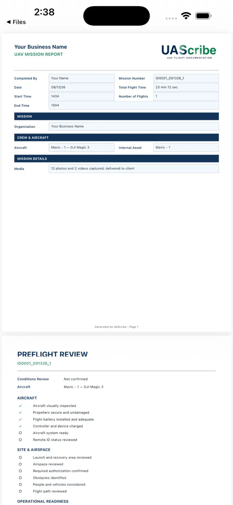

Your brand on the report
Add your organization name and logo to the PDF you share.
DRONE FLIGHT DOCUMENTATION
Looking for drone logbook software for iPhone or iPad? Record your UAV flight details, keep mission history, and create branded PDF reports with UAScribe.
Try 3 reports for free.
One-time Pro unlock. No subscription.
For iPhone & iPad · No account required
SEE UASCRIBE IN ACTION
Link a saved customer quote, select crew and aircraft, and request location-based information. Record your preflight checks and flight time as part of the same workflow.
Captioned walkthrough · Fictional sample project · No audio
Download on the App StoreTry 3 reports for free.
A useful flight record brings together the date, mission, aircraft, pilot, location, and flight time. UAScribe lets you enter the details of the operation and return to saved records in History. You enter your flight details; automatic DJI or Autel log syncing is not included.
Record the remote pilot in command (RPIC), aircraft, crew, mission details, flight times, and communication plan. Use the optional preflight checklist to support a consistent documentation routine.
Request coordinates, nearby airport information, surface-airspace information, and National Weather Service observations using the device’s current location or an address you enter. Online lookups depend on service availability.
UAScribe supports documentation. Airspace and weather information are informational and do not grant flight authorization or replace your preflight responsibilities.
The report preview shows the PDF format available from UAScribe. Add your organization name and logo, document the operation, and share the finished report with a customer or save it for your records.
For a business workflow, start with a drone service quote. For more context, explore flight documentation for Part 107 pilots and your aircraft maintenance records.

SEE UASCRIBE IN ACTION
Include the linked quote in the same PDF, review the completed report, then save, share, or print it. Use the iOS share sheet to select your destination or a compatible printer.
Captioned walkthrough · Fictional sample project · No audio
Download on the App StoreTry 3 reports for free.
Add your organization name and logo to the PDF you share.
Save, share, or print your completed PDF through the iOS share sheet. Printing requires a compatible printer.
Try 3 reports for free, then create unlimited reports with a one-time Pro unlock.